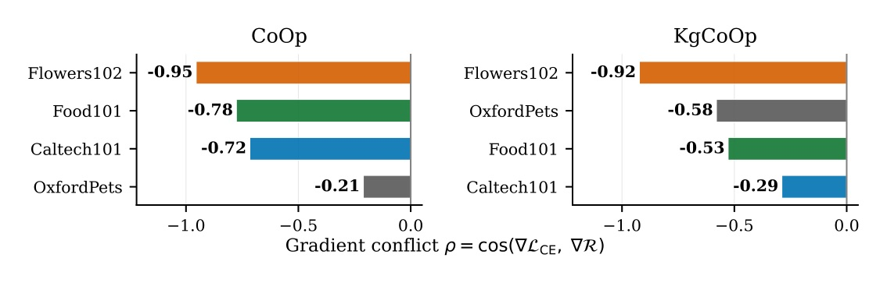
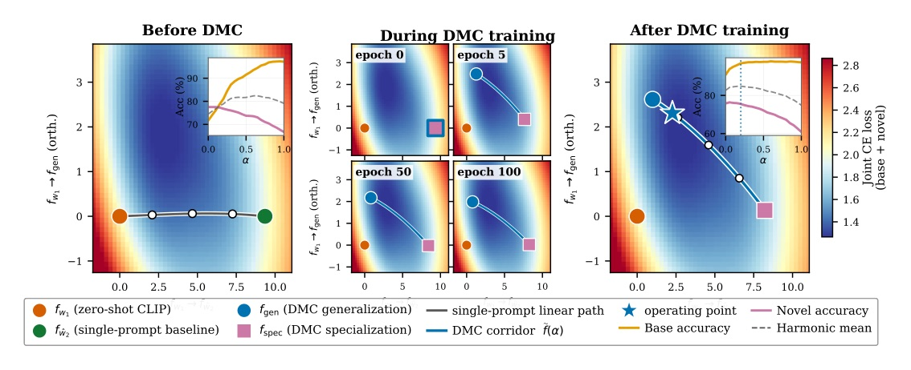
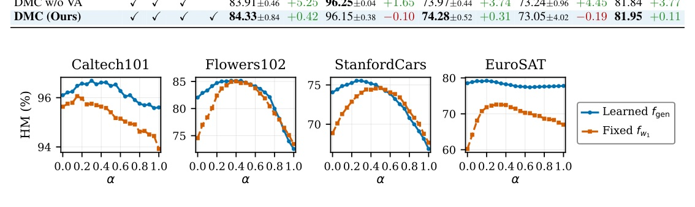
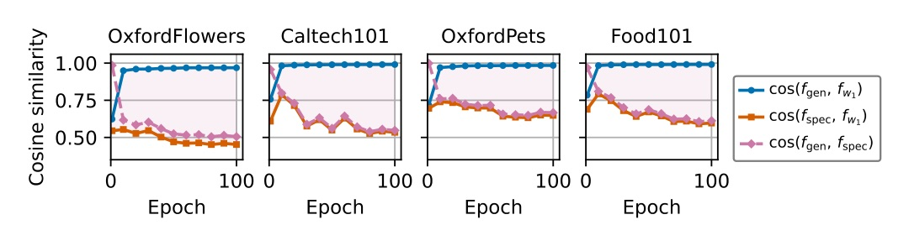

單一 prompt 同時背 CE 與 cosine 正則，梯度在收斂點必然對立。DMC 不改 loss，改參數化：兩個 prompt、各管一個目標，用文字特徵空間的 LMC corridor 耦合。


| 方法 | Avg HM | 對照 MERGETUNE |
|---|---|---|
| CLIP (zero-shot) | 71.70 | — |
| CoOp + MERGETUNE (ICLR 26) | 76.45 | — |
| CoOp + DMC | 77.23 | +0.78 |
| KgCoOp + MERGETUNE | 76.43 | — |
| KgCoOp + DMC | 76.76 | +0.33 |
| MMA + MERGETUNE | 72.58 | — |
| MMA + DMC | 73.16 | +0.58 |
MERGETUNE 與 DMC 為 3 seeds 平均（α=0.20）。CoOp 增益出現於 9/11 資料集、KgCoOp 8/11；最大增益（CoOp）：EuroSAT +2.30、FGVCAircraft +1.90、StanfordCars +1.83（§4.2, p7–8）
| 資料集 | MERGETUNE | DMC | Δ |
|---|---|---|---|
| EuroSAT | 73.45 | 75.75 | +2.30 |
| FGVCAircraft | 33.33 | 35.23 | +1.90 |
| StanfordCars | 73.38 | 75.21 | +1.83 |
| UCF101 | 78.42 | 80.07 | +1.65 |
| SUN397 | 77.85 | 78.75 | +0.90 |
| Caltech101 | 96.27 | 96.41 | +0.14 |
| OxfordPets | 96.13 | 96.04 | −0.09 |
| DTD | 64.26 | 63.53 | −0.73 |
論文：所有 CoOp/KgCoOp 的退步都在 seed 變異內（§4.2, p7）。差值為依 Table 1 兩欄相減；DMC 平均 HM 仍低於 published PromptSRC 79.97、MMA 79.87、CoPrompt 80.48（Table 1, p8）。
| 方法（4 資料集平均） | Avg HM | Δ vs 上一列 |
|---|---|---|
| CoOp | 79.52 | — |
| MERGETUNE w/o R | 79.26 | −0.26 |
| MERGETUNE | 81.48 | +2.22 |
| DMC w/o R | 78.07 | −3.42 |
| DMC w/o VA | 81.84 | +3.77 |
| DMC (Ours) | 81.95 | +0.11 |
Δ 為相對上一列（同 Table 2）。無 R 時兩 prompt 塌縮到同一 base 專精解、DMC 低於 MERGETUNE 於所有四資料集；VA 只是小幅精修（4 中 2 個正向）（§4.3, p8–9）。注意 Table 2 batch size 128，與 Table 1（32）數值不同。


At a converged single prompt, the gradients of the two terms point in opposing directions on all eight dataset–baseline pairs we measure (four datasets, CoOp and KgCoOp; Figure 4).
在收斂的單一 prompt 上，兩個損失項的梯度在我們量測的全部八組資料集 × 基線配對中方向相反（四個資料集，CoOp 與 KgCoOp；圖 4）。§1, p2
Training-free merging therefore cannot replace the trained corridor.
因此，免訓練的合併無法取代經過訓練的 corridor。§4.2, p7
DMC helps only if the two endpoints stay apart. If fgen ≈ fspec, every f~(α) is the same classifier.
只有兩個端點保持分離，DMC 才有幫助。若 fgen ≈ fspec，則每個 f~(α) 都是同一個分類器。§4.2, p8
The anchor R is what makes decoupling work: without it, both prompts collapse to the same base-specialized solution.
錨 R 才是讓解耦成立的關鍵：沒有它，兩個 prompt 會塌縮到同一個 base 專精解。§4.3, p8
Decoupled Mode Connectivity for Base-to-Novel Generalization in Vision-Language Models
arXiv 2611.09655 · NeurIPS 2026